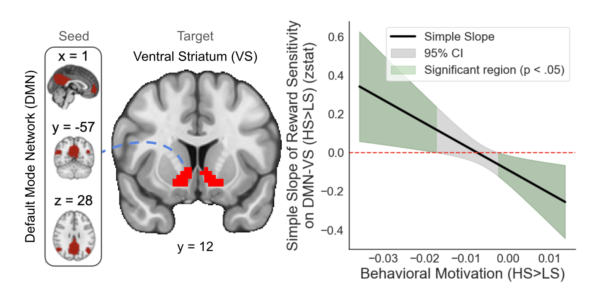

James B. Wyngaarden III
Neuroscientist | PhD Candidate | Decision-Making Researcher
About Me
I'm a PhD candidate in cognitive neuroscience and social psychology at Temple University, working in the Neuroeconomics Lab under the mentorship of Dr. David V. Smith. My research focuses on understanding how the aging brain makes decisions, with particular attention to financial exploitation vulnerability in older adults—a critical public health problem responsible for over $10 billion in annual losses in the United States.
My dissertation work, supported by an NIH F31 predoctoral fellowship from the National Institute on Aging and a pilot grant from the Scientific Research Network on Decision Neuroscience and Aging, examines whether targeted brain stimulation can improve decision-making in older adults. Specifically, I'm investigating how transcranial alternating current stimulation (tACS) targeting the prefrontal cortex can modulate reward-based learning and reduce confirmation bias—a key mechanism underlying vulnerability to financial scams. This work represents a translational approach that uses noninvasive brain stimulation both as a tool to understand the neural mechanisms of exploitation and as a potential intervention to protect vulnerable populations.
Beyond my dissertation, my research program examines how individual differences in reward sensitivity shape behavior and neural function across development and aging. I've led the development and public release of three major neuroimaging datasets on OpenNeuro comprising over 500 participants, positioning my work to build research infrastructure that advances the field beyond individual papers. I employ fMRI, computational modeling, and machine learning to understand decision-making processes, with expertise in Python, R, MATLAB, and advanced statistical methods.
Research
My research program centers on understanding how individual differences in reward sensitivity shape behavior and neural function across development and aging, with particular attention to vulnerable populations. I study reward processing as a multi-level construct that manifests differently depending on domain specificity (social vs. monetary rewards), state-dependent factors (behavioral motivation, anhedonia), and network-level integration (default mode network-ventral striatum connectivity).
Reward Sensitivity as a Multi-Level Construct
I treat reward sensitivity not as a monolithic trait but as something that emerges from dynamic interactions between stable individual differences and context-dependent states. My work demonstrates that understanding reward processing requires examining both what people bring to situations (trait sensitivity) and how current motivational states shape neural responses.
Recent findings show that behavioral motivation fundamentally moderates the relationship between reward sensitivity and brain connectivity. When highly motivated, reward-sensitive individuals show stronger default mode network-ventral striatum coupling. When less motivated, this relationship reverses. This pattern holds across gain and loss contexts, suggesting that motivational context determines when enhanced or reduced connectivity emerges.

Figure: Behavioral motivation moderates the relationship between reward sensitivity and default mode network-ventral striatum connectivity during reward anticipation. Among highly motivated individuals, greater reward sensitivity associates with enhanced connectivity; among less motivated individuals, this relationship reverses.
I've also developed novel approaches to studying decision-making under ambiguity. The Linked Colored Lottery Task moves beyond traditional models that assume people only consider best- and worst-case scenarios, instead examining how individuals form beliefs about probability distributions and act on those beliefs.
Key contributions:
- Aberrant reward sensitivity (hyper- or hypo-) relates to altered corticostriatal function and substance use risk
- Social and monetary rewards engage partially overlapping but functionally distinct neural circuits
- State-level behavioral motivation moderates how trait reward sensitivity manifests through neural network integration
Aging and Financial Exploitation Vulnerability
My most distinctive contribution links basic reward neuroscience to financial exploitation vulnerability in older adults—a critical public health problem causing over $10 billion in annual losses in the U.S. I'm examining how age-related cognitive decline creates vulnerability through specific neural mechanisms, with the ultimate goal of developing interventions.
The framework centers on confirmation bias: as older adults increasingly prioritize present-oriented goals tied to social and emotional satisfaction, their ability to objectively evaluate contradictory information weakens. Prefrontal cortex deterioration and reduced cognitive flexibility mean older adults rely more heavily on initial beliefs and trusted sources. This is amplified during mild cognitive impairment and Alzheimer's disease, making them more susceptible to scams that align with preexisting beliefs or fears.
Socioeconomic factors compound this vulnerability. My collaborative work shows that cognitive decline interacts with socioeconomic status—individuals with lower SES show stronger associations between everyday cognitive decline and financial exploitation risk.
My dissertation research uses transcranial alternating current stimulation (tACS) targeting prefrontal cortex to modulate reward-based learning and reduce exploitation vulnerability. This represents a translational approach: using noninvasive brain stimulation both as a mechanistic tool and potential intervention.
Key contributions:
- Mechanistic framework: age-related PFC decline → confirmation bias → financial exploitation
- Evidence that cognitive decline × low SES predicts heightened exploitation risk
- Proposal that noninvasive brain stimulation could enhance prefrontal function and reduce confirmation bias
- Identification of specific neural targets (vmPFC, dlPFC, ACC) for intervention
Methodological Rigor and Open Science Leadership
I've contributed to the development and public release of three major datasets on OpenNeuro (500+ participants total), helping to build research infrastructure that advances the field beyond single papers:
Social/nonsocial reward processing (N=59): Four fMRI tasks (shared rewards, trust, ultimatum games) enabling examination of domain-specific reward processing and strategic social decision-making.
Lifespan reward processing (N=114, ages 21-80): Multi-echo fMRI + multi-shell diffusion imaging examining social rewards, trust, and fairness across adulthood. Includes FLAIR scans for white matter assessment, creating opportunities for multimodal analyses linking structural and functional connectivity to financial exploitation risk.
Risky/ambiguous decision-making (N=353): Novel Linked Colored Lottery Task capturing belief-based ambiguity processing, with comprehensive individual difference measures (autism spectrum traits, financial vulnerability, substance use, mood).
All datasets are BIDS-compliant with extensive phenotypic data, facilitating reuse and integration. Methodological innovations include multi-echo fMRI for improved signal quality and novel tasks that capture psychological processes traditional paradigms miss.